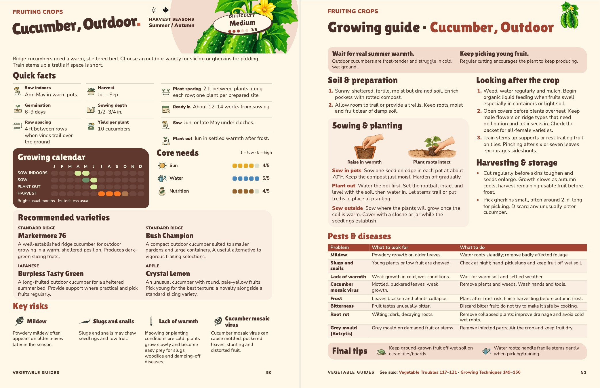

Cucumber, Outdoor
Pages 50–51, checked 5 November. The first Final tips image now uses the same approved fruit-on-board icon as Courgettes and Marrows, replacing the cloche.
All wording, ten Quick facts, four varieties, eight selected pest entries and the planting illustrations are unchanged. The usual Quick facts and pH checks are complete.

Approved by John on 5 November. The exact approval record preserves both editions. Canonical data, the full review and main book remain unchanged. Changes, sources and checks.